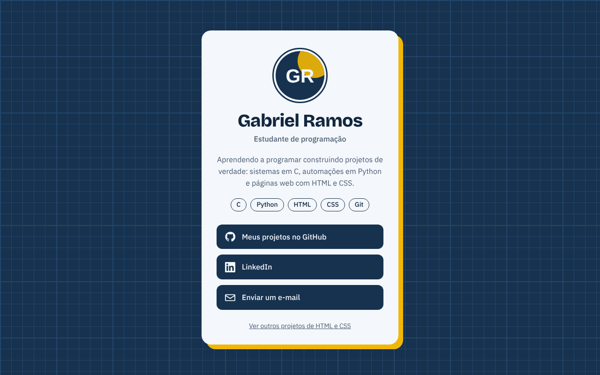
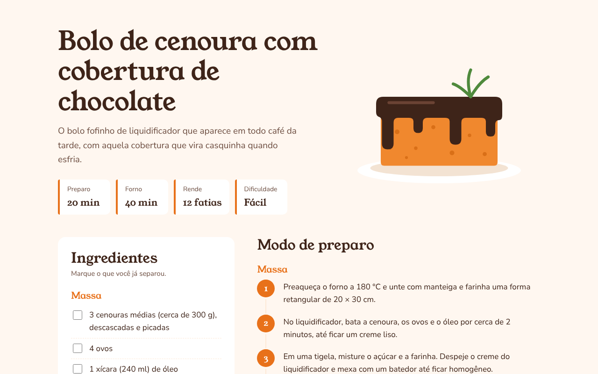
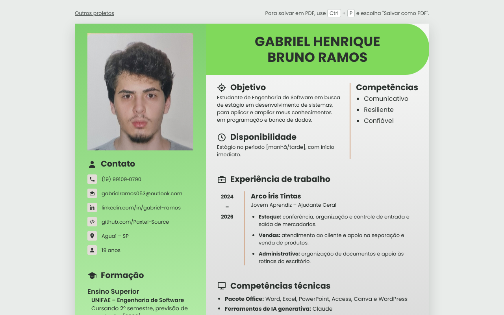

-

Cartão de visita digital
Foto, bio e botões para GitHub, LinkedIn e e-mail, no estilo "link na bio".
-

Receita de bolo de cenoura
Lista de ingredientes para marcar, passos numerados, tabela nutricional e versão para impressão.
-

Currículo online
Currículo com foto, experiência em linha do tempo e projetos, pronto para salvar em PDF.